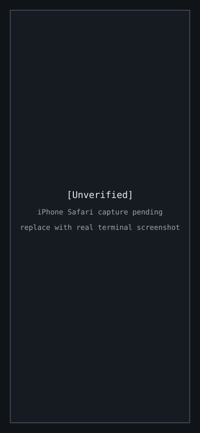

Terminal Fidelity Smoke Matrix
Status: [Unverified] real iPhone Safari screenshots have not been captured in this repo state.
Test surface: iPhone Safari paired to onibi up, using the live web terminal cockpit over HTTPS/WebSocket.
Use scripts/terminal-smoke.sh from inside the paired phone terminal to cover host-side checks. The script verifies commands that can run without human keypresses and reports manual rows separately.
Matrix
| App | Phone action | Auto coverage | Expected behavior | Screenshot |
|---|---|---|---|---|
vim | Open vim, edit text, use arrows, Esc, :wq. | scripts/terminal-smoke.sh runs Vim in ex mode and writes a fixture. | Full-screen editor input, status line, cursor, escape keys, and write/quit remain usable. |  |
nvim | Open nvim, edit text, use arrows, Esc, :wq. | Script runs Neovim in ex mode when installed. | Same Vim behavior with Neovim rendering and input. | |
emacs | Open emacs -nw, move cursor, type, save, quit. | Script runs Emacs batch write when installed. | Control/meta input and full-screen redraw remain usable. | |
tmux | Create panes/windows, switch panes, detach/attach. | Script creates a detached tmux session and captures pane output. | Pane redraw, status bar, detach/attach, and Onibi handoff preserve the same session. | |
less | Page a long file, search text, quit. | Script opens a short fixture with less -F -X when installed. | Paging, search highlight, quit, and viewport resize remain usable. | |
htop | Open htop, scroll, sort, quit. | Script checks htop --version when installed. | Alternate-screen redraw, function keys, color, and quit remain usable. | |
claude / codex / opencode | Start an agent CLI, type prompt text, handle approval or interrupt. | Script checks installed agent CLIs only. | Agent TUI output, prompts, streaming text, interrupt, and approval handoff remain readable. | |
ranger / fzf / gum | Open selector/file UI, navigate, select, quit. | Script runs fzf --filter when installed and checks ranger/gum presence. | TUI selection, arrows, search/filter input, and quit remain usable. |
Screenshot Capture
Save real phone captures under docs/assets/terminal-fidelity/ and replace the placeholder image links above:
| App | Target artifact |
|---|---|
vim | docs/assets/terminal-fidelity/vim.png |
nvim | docs/assets/terminal-fidelity/nvim.png |
emacs | docs/assets/terminal-fidelity/emacs.png |
tmux | docs/assets/terminal-fidelity/tmux.png |
less | docs/assets/terminal-fidelity/less.png |
htop | docs/assets/terminal-fidelity/htop.png |
claude / codex / opencode | docs/assets/terminal-fidelity/agents.png |
ranger / fzf / gum | docs/assets/terminal-fidelity/selectors.png |
Runbook
- Start Onibi on the Mac:
onibi up --transport=lan. - Pair from iPhone Safari and open the terminal cockpit.
- Run
scripts/terminal-smoke.shfrom the phone terminal. - Run each manual phone action in the matrix.
- Capture iPhone Safari screenshots and replace the placeholder embeds.
- Keep issue verification open until the script output and real screenshots are attached.